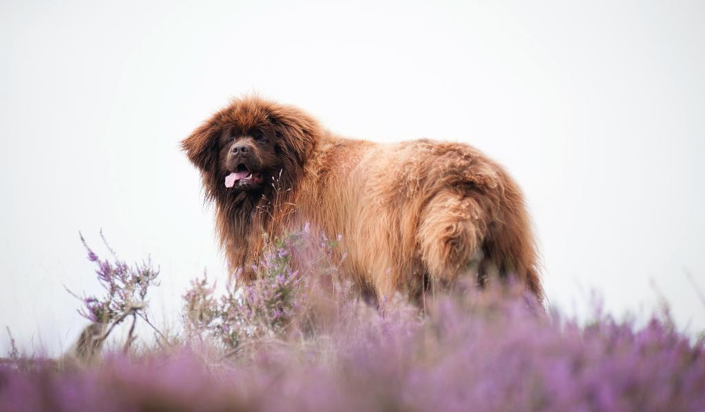

Ньюфаундленд – собака, мимо которой невозможно пройти без улыбки. Ее могучие формы и «медвежий», несколько устрашающий облик не способны скрыть великодушное сердце и добрый нрав. Превосходный характер, чувство собственного достоинства, невероятная доброта, преданность, отвага, выразительная величественная внешность – те достоинства, которые принесли этим собакам мировую славу. Они являются героями многих литературных произведений, репортажей, участниками опасных экспедиций и боевых действий. Ньюфаундленд в семье – это всегда неиссякаемый источник радости, тепла и любви.